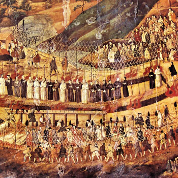

Isusovački blaženici
Brat
Bl. Mihael Nagashima
1583. – 1628.
Michael Nagashima godinama je u domu skrivao svećenike i okupljao kršćane radi sakramenata. Kao isusovački brat odbio je sudjelovati u pogubljenju svećenika.
Tekst je preveden i prilagođen uz pomoć umjetne inteligencije.

Izvor slike
- Spomendan
- 6. veljače
- Zaštitništvo
- Nije navedeno u izvoru
- Životni vijek
- 1583. – 1628.
- Djelovanje
- Misije i evangelizacija · Obraćenje i novi počeci · Progoni i progonstvo · Mučeništvo
- Razdoblje
- 16., 17. stoljeće
- Rođenje — dostupni podaci
- 1583.; dan i mjesec nisu potvrđeni u provjerenom izvoru.
- Mjesto rođenja
- Japan
- Datum smrti
- 25.12.1628.
- Mjesto smrti/mučeništva
- Brdo mučenika, Nagasaki, Japan
- Okolnosti smrti/mučeništva
- Spaljen na lomači na Božić nakon odbijanja odricanja vjere.
- Uloga
- Brat
- Mučenik
- Da
- Ostale oznake
- Kateheta i pratitelj isusovačkih misionara
- Pripadnost
- Isusovac
- Drugi oblici imena
- Michael Nagashima · Michael
Životopis
Michael Nagashima rođen je u nekršćanskoj obitelji, a otac Ivan Krstitelj de Baeza krstio ga je u jedanaestoj godini. Živio je molitveno i pokornički te položio privatni zavjet čistoće. Nakon zabrane kršćanstva dvanaest je godina skrivao de Baezu, a zatim drugoga isusovca. Noću je dovodio vjernike radi sakramenata i duhovnoga razgovora. Oko 1627. primljen je u Družbu Isusovu; potom je godinu dana proveo u kućnom pritvoru.
Dana 3. rujna 1628. odbio je dati drva za pogubljenje svećenika jer nije htio sudjelovati u nepravednu ubijanju. Uhićen je, imovina mu je oduzeta, a mučenjem su ga nastojali prisiliti na odricanje od vjere. Nakon premlaćivanja i mučenja vodom odveden je na vrela sumporna izvorišta Unzena. Nakon opeklina ostavljen je na hladnoći, a ujutro ponovno polijevan vrelom vodom. Umro je na Božić 1628., zazivajući Isusovo i Marijino ime.
Vatikanski popis japanskih isusovačkih mučenika navodi ga pod imenom Michael Nacascima i potvrđuje beatifikaciju 7. srpnja 1867. pod papom Pijem IX.
Tekst je preveden i prilagođen uz pomoć umjetne inteligencije.
Pročitaj više na izvornoj stranici ↗